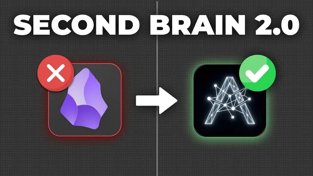

이 세컨드 브레인 세팅 없이 클로드 쓰지 마세요

원본 영상 보기 →
- second brain의 병목은 "무엇을 담느냐"가 아니라 "어떻게 최신 상태로 유지하느냐"다
- MCP를 통한 "쓰기" 자동화가 핵심 차별점이다
- 새 도구 하나에 올라타기 전에 "한계 목록" 자체가 체크리스트다
한 줄 요약
Claude용 "second brain"(사업·팀 맥락과 기억을 텍스트 파일로 쌓아 AI에 물려주는 지식 베이스)을 대부분 Obsidian으로 관리하지만, 팀 공유·권한·백업·자동 갱신이 안 된다는 한계가 있다. 이 영상은 그 네 가지를 메운 오픈소스 앱 Baldur를 만든 팀이 전체 기능을 데모하고 설치법까지 보여주는 제품 소개 영상이다.
전체 내용 정리
second brain이란 무엇이고 왜 지금 가장 가치 있는 세팅인가
영상은 Claude를 비롯한 AI에 second brain을 붙이는 것이 지금 AI에서 할 수 있는 가장 가치 있는 일이라고 말한다. second brain(또는 "AI operating system")은 서로 다른 채팅, 서로 다른 AI 제공사, 나아가 팀 전체에 걸쳐 AI 에이전트에게 지속적인 맥락(context)과 기억(memory)을 주는 개념이다. 이렇게 하면 AI가 일반적인(generic) 답변 대신 내 사업·팀·과거 기록을 반영한 훨씬 나은 답변을 낸다. 이 맥락과 기억은 결국 내 컴퓨터의 한 폴더 안에 있는 텍스트 파일들이고, AI 에이전트에게 그 폴더 접근 권한(folder access)을 줘서 활용하게 한다.
왜 다들 Obsidian을 쓰는가
파일과 하위 폴더가 수백 개로 늘어나면 금세 지저분해지기 때문에, 대부분 Obsidian이라는 도구로 이 폴더와 파일을 더 낫게 정리한다. 영상의 설명으로 Obsidian은 본질적으로 "컴퓨터에 있는 폴더를 시각적으로 덧입힌 레이어(visual overlay)"다. 좋은 도구지만, 본인·팀·클라이언트에 적용해 본 사람이라면 second brain 용도에서 실제 한계를 느꼈을 거라고 말한다.
Obsidian의 네 가지 한계
첫째, Obsidian 자체에서 second brain의 맥락과 기억을 팀과 공유·동기화하는 기능이 없다. 둘째, 팀 환경에서 권한 설정이 없어 일부 파일은 비공개, 일부는 읽기 전용, 일부는 팀 전체 공개처럼 나눌 수 없다. 셋째, 버전 관리(version control)나 백업이 없어 second brain에서 뭔가 잘못됐을 때 되돌릴 방법이 사실상 없다. 넷째, second brain을 connector나 MCP로 만들 수 없어서, 스케줄 작업이나 routine이 최신 회의록·이메일·리드 상태 같은 정보로 second brain을 자동 업데이트하지 못한다.
기존 워크어라운드가 부족한 이유
이 한계 때문에 사람들은 GitHub, Google Drive, Dropbox, iCloud, Notion, 또는 Relay라는 Obsidian 플러그인으로 우회책을 만들어 왔다. 영상 만든 팀도 몇 개는 직접 써봤고 채널에서 다룬 적도 있다. 하지만 대부분은 진짜 해결책이 아니라 어설픈 우회책이라, 실시간 동기화가 안 돼 맥락 문서에 충돌(conflict)이 생기거나 수동 백업이 필요하고, 제대로 된 권한 설정이 없으며, 기술에 익숙하지 않은 팀에 세팅하기엔 비실용적이고 오류가 잦다.
Baldur 데모 — 팀 공유와 실시간 동기화
이 앱의 이름은 Baldur이며(영상에서 "Balder"로도 발음), 오픈소스라 개인은 무료로 쓰거나 호스팅 버전을 쓸 수 있다. 화면은 Obsidian과 매우 비슷하고, 폴더에 연결되며 wiki link와 graph view도 그대로 있다. 팀원 공유는 settings → vault settings → members에서 이메일로 초대하고 admin 또는 member로 지정한다. 초대받은 사람은 앱을 받아 로그인한 뒤 코드 하나만 입력하면 second brain 전체가 즉시 로드된다. 폴더를 직접 공유할 필요가 없다. 실시간 동기화라 나·내 에이전트·팀원 누구든 문서를 수정하면 팀 전체의 second brain에 바로 반영되고, 지연이 없어 충돌 문제가 없다. 팀원이 문서 안에 들어와 실시간으로 편집하는 것도 보인다. 한 계정에 여러 vault(개인용, 팀용)를 두고 쉽게 전환할 수도 있다.
권한 설정과 자동 백업·버전 이력
vault settings의 access 탭에서 모든 폴더·하위 폴더·파일을 shared, read-only, private 중 하나로 지정할 수 있고, 팀원별로 다르게 설정할 수도 있다. 백업은 매일 자동으로 생성되거나 수동으로 만들 수 있고, second brain 소유자는 언제든 과거 백업으로 전체를 되돌릴 수 있다. 파일별 버전 이력도 클릭해서 볼 수 있는데, 언제 누가 변경했는지 확인하고 되돌릴 수 있다.
내장 MCP·connector로 second brain 자동 갱신
Baldur에는 Claude나 다른 AI 도구용 MCP와 connector가 내장돼 있다. 덕분에 Claude routine이나 스케줄 작업이 회의록·이메일 같은 소프트웨어에서 실시간 맥락을 끌어와 second brain을 최신 데이터로 자동 업데이트할 수 있다. 설정은 링크를 복사해 connectors → add → add custom connector에서 링크를 붙이고 이름(예: second brain)을 준 뒤 continue → connect → 계정 로그인 → 어떤 vault에 연결할지 선택하면 된다. 그러면 예를 들어 회의가 끝나자마자 회의록이 자동 업데이트되는 routine을 돌릴 수 있다. routine 설정법은 별도 튜토리얼과 본인의 AI accelerator 안 second brain 코스에서 다룬다고 안내한다.
오픈소스·셀프호스팅과 설치 방법
앱은 전부 오픈소스다. 기본적으로 데이터는 Baldur가 관리하는 서버로 동기화되지만, 셀프호스팅을 하면 데이터가 내 서버로만 흐르고 필요하면 GDPR을 준수할 수도 있다. Baldur의 GitHub 저장소에서 self-hosting 항목을 찾아 "deploy on Railway"를 누르고 Railway 계정을 만들어 서버를 세팅한 뒤, 앱에서 서버 링크를 내 것으로 교체하면 된다. 설명란 첫 링크에 전체 단계별 가이드가 있다. 오픈소스라 fork해서 개선·커스터마이즈도 가능하다. 설치는 baldur.com에서 내 컴퓨터용으로 다운로드하고, onboarding 화면에서 새 vault 생성, 기존 폴더 열기, 팀 합류(이메일+코드) 중 하나를 고른다. second brain 파일 자체가 아직 없다면 그것부터 만들어야 하며, 영상은 별도 영상과 AI accelerator 코스, 1:1 기술 콜, 커뮤니티, 새로 낸 초급~고급 클라우드 코스를 안내한다. 새 계정은 동기화가 꺼져 있으니 vault settings → general → turn on sync를 누르면 서버가 세팅되고 파일이 업로드되며 모든 옵션이 열린다. AI 제공사에서는 그 폴더를 지정해 에이전트에 접근 권한을 준다. 이 앱은 몇 주 전에 만들어 팀에서 실제로 잘 쓰고 있고 새 앱이라 피드백을 원한다고 덧붙인다.
핵심 인사이트
- second brain의 병목은 "무엇을 담느냐"가 아니라 "어떻게 최신 상태로 유지하느냐"다: 이 영상이 파고든 네 한계(팀 동기화, 권한, 백업, 자동 갱신) 전부 콘텐츠 생성이 아니라 운영·유지의 문제다. 혼자 쓰더라도 맥락이 낡으면 AI 답변 품질이 바로 떨어진다.
- MCP를 통한 "쓰기" 자동화가 핵심 차별점이다: 대부분의 MCP 논의는 AI가 데이터를 읽는 데 집중하지만, 여기서는 routine이 회의록·이메일을 스스로 second brain에 써 넣어 사람 손을 거치지 않고 맥락을 갱신한다.
- 새 도구 하나에 올라타기 전에 "한계 목록" 자체가 체크리스트다: Baldur를 쓰든 안 쓰든, 팀 동기화·파일별 권한·일 단위 백업·자동 업데이트 경로 네 가지는 어떤 second brain 세팅을 평가하든 그대로 질문 목록으로 쓸 수 있다.
오늘 당장 해볼 것
- 지금 쓰는 Claude 맥락 폴더(또는 Obsidian vault)를 열어, 파일마다 "마지막으로 손댄 날짜"를 훑어본다. 한 달 이상 방치된 핵심 문서(회사 소개, 서비스 설명, 자주 쓰는 지침)를 3개만 골라 오늘 최신 내용으로 고친다.
- 자동화 외주 업체나 개발자에게 문의할 때 "회의록·이메일·리드 상태가 끝나는 즉시 우리 지식 문서에 자동으로 반영되게 하려면 MCP나 스케줄 방식으로 어떻게 구성하나요"라고 구체적으로 물어본다. 이 영상의 routine 개념이 그 질문의 근거다.
- 팀이 있거나 곧 사람을 뽑을 계획이면, 지식 문서를 "전체 공개 / 읽기 전용 / 나만"으로 나눠 종이에 분류표를 만든다. 도구를 바꾸지 않아도 지금 폴더 구조에 이 구분을 반영해 둘 수 있다.